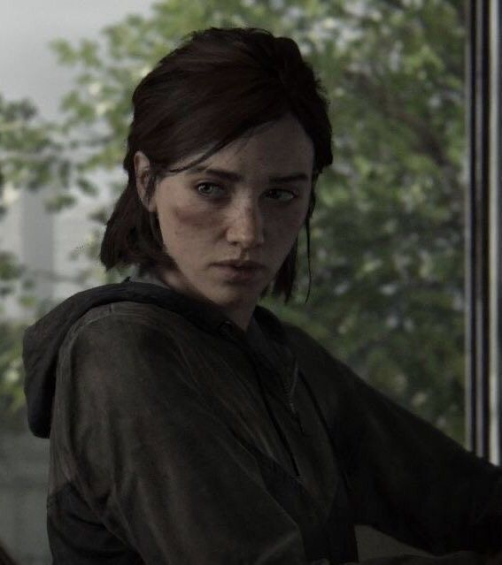
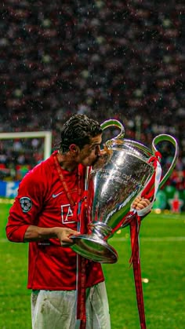
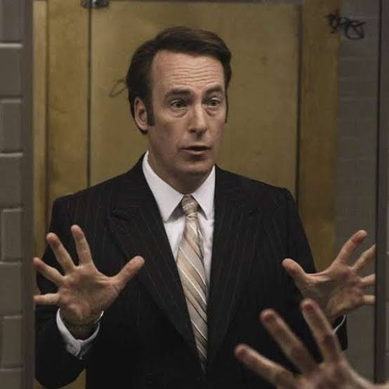
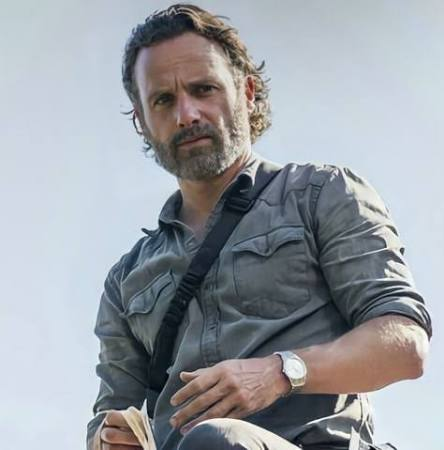

.png)


You are probably wondering what charachters and personalities I like. Well here you go then.

Name: Ellie WilliamsMy favourite video game charachter of all time, from my favourite game of all time(The Last Of Us). I admire how she endures tragedy. A absolutely complex charachter with various themes and an absolute treat to play as in both games. Very few charachters and stories hit me as hard as hers did when i was a little boy back in 2015 and 2020.

Name: Cristiano RonaldoI have been a diehard ronaldo fan since ive been watching football. My footballing idol and someone who made my childhood great. I still remember seeing him score screamers and dominate europe while winning a 3 peat, ballondors and numerous awards. A true inspiration for me :)
Name: Ben 10My favourite cartoon charachter of all time. Ben 10 has been at the heart of my childhood and is one of the very few shows i still watch from time to time right now.I admired him for his goofy attitude and loved how selfless and heroic he is and i still do.

Name: Saul GoodmanOne of the best charachters in fiction. I loved how "colorful" he was. I adored him for his dynamic with his brother and how he broke norms as a lawyer and excelled as a lawyer who played out of the box and his own way; A true rebel.

Name: Rick GrimesMy favourite TV show charachter. No one comes close for me when it comes to Rick. Seeing his journey in an apocalyptic world leading a group of people going from Officer Friendly to a hardened survivor was a piece of cinema no one can replicate for me.
Name: Leon KennedyCool, Calm, Collected and a total badass. Fell in love with his charachter when i first played Resident Evil 2 back in 2nd grade on a bust up PC. Loved him in RE4. For me he is special solely because of how deeply he feels things without showing that he does.Tragic but nonetheless an absolute gem for gamers
Well there are more, but these are my all time favourites.